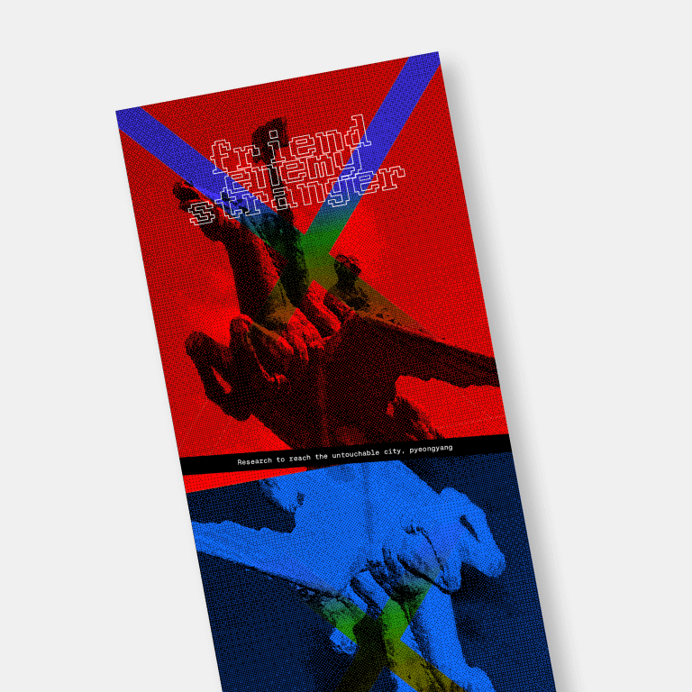

-

진짜 혹은 가짜 Real or Fake
김유빈 Yubin Kim
-

안전 구역 Safe Area
곽희문 Guo Xiwen
-
트랜스 하이프 TRANS_HYPE
이수성, 남지안 Lee Susung, Nam Jian
-
우연이 낳은 성공 Accidental Success
문서연 Seoyeon Mun
-

사람이 사과가 되는 데 얼마나 걸리나? How long does it take for a person to become an apple?
손쌍통 Sun Shuangtong
-

압축 사회 Compressed Society
송채우 Song Chaewoo
-
선악 판단 부서 Good & Evil Judgement Department
심규민 Sim Kyumin
-
위장의 숲 Integrove
양소이 Soee Yang
-

바다로부터의 편지 A Letter from the Sea
양하오 Yang Hao
-

아틀라스: 닿을 수 없는 세계를 잇다 Atlas: Connect the untouchable world
은나연 Eun Nayeon
-
괴물 도감 Monster Pictorial Book
장재희 Jang Jaehee
-

감시 사회 Society of Surveillance
정소린 Zheng Xiaolin
-

감정 계산기 Mind Calculator
정소희 Sohee Chung
-
괴로움의 방 Rooms of Pain
지유빈 Ji Uvin
-

즉흥극: A 혹은 B Improvisational theatre: A or B
판펑옌 Fan Feng Yan
-
패스트푸드 중독 Fast Food Poisoning
평요옥 Peng YaoYu